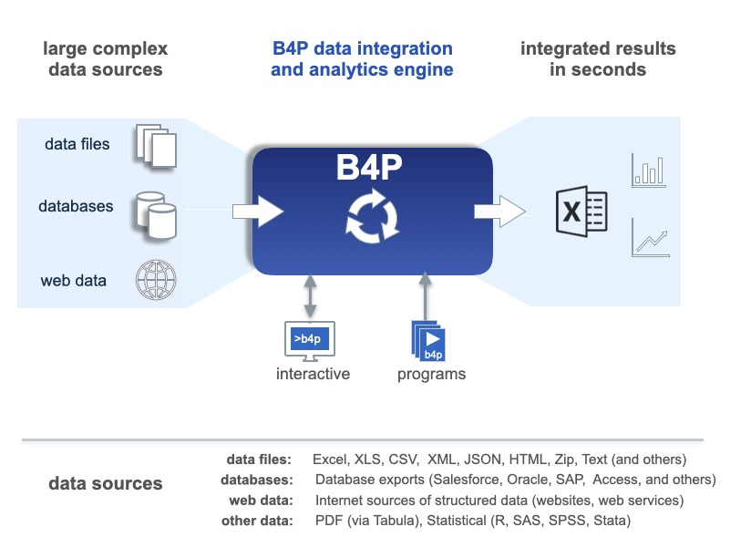

Welcome
NextOverview
B4P a Low-Code Solution for data analysts to dramatically improve their performance in extracting insights from big data.
B4P is a powerful data integration and analytics engine with built-in programming language, and is purpose-built for ingestion,
integration, and analysis of many large complex data sources, generating rapid results in easily understood form for immediate use in
Excel and other business intelligence tools.

Getting Started
| User Guide | Overview and getting started |
| Reference Manual | Comprehensive language, features and function reference |